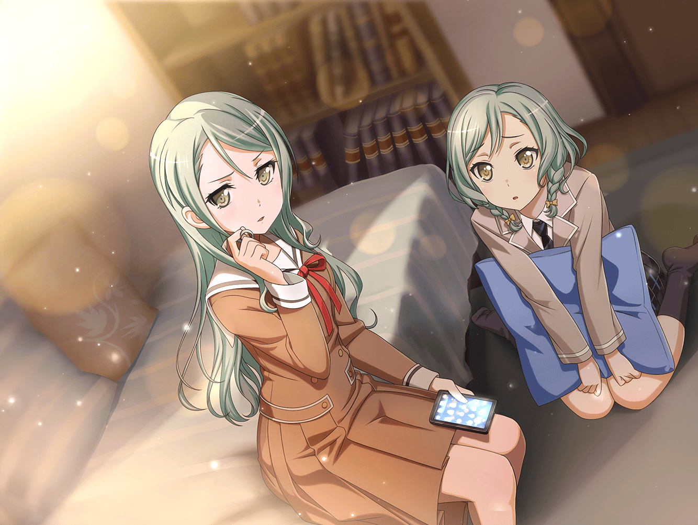

数日後
スタジオ ロビー
リサ
ふぅ……
あこ
今日も疲れたぁ〜〜〜
紗夜
ちょっと。宇田川さんも今井さんも。
ここは通路なんだから、ダラダラしないで
友希那
すみません。次回の予約、いいですか
スタッフ
毎度どうも、友希那ちゃん。
そうだ、来月のこの日なんだけどさ、予定、どうかな？
他でライブの予定とか、入れちゃってる？
友希那
いえ、私たちはまだ……
ライブハウススタッフ
あっ。最近ソロからバンドに変えたんだっけ？
じゃあ大丈夫かな？ 急遽イベントに穴が開いちゃって、
他に頼めそうな人、いなくてさ～
一同
！

ライブハウス前
あこ
すごいっ……
さっそくライブ出演がきまった……
あこ
メジャーのスカウトも来るって噂のイベント……
……も……もしかして……あこ達も……？
紗夜
確かにこの地区のバンドにとっては、
登竜門と呼ばれているイベントね。
けれど私達はメジャーと言うより、もっと……
友希那
そう。もっと高みを目指しているわ。
……メジャーは決して、音楽の頂点じゃない。
あこ。そう思えない人は、このバンドに要らないわ
あこ
えっ。そうなんですか？
でも……メジャーデビューしたらあこも、
カッコイイ人になれるかなって……
友希那
どこがカッコイイの？
メジャーなんて『音楽を売るため』の場所よ。
本当の音楽のことなんて、なにもわかってない……
紗夜
？ すべてがそうではないと、
私は思いますけれど……
紗夜
（湊さん……どうしたのかしら。
なんだかムキになっているように見える……）
紗夜
でも、そうね。私達は『自分たちだけの』
頂点を見つけるためにここにいるはず。
宇田川さん。あなた、よくお姉さんの話をしているけれど……
紗夜
あなたが音楽をやりたいのではなく、
お姉さんに憧れて、お姉さんのようになりたいだけなら、
私達とではなく、お姉さんとバンドを組んだ方がいいわ
あこ
……！ あ、あこはこのバンドがいいですっ
お、おねーちゃんもドラムだし……っ、だからっ、
あこも、おねーちゃんみたいになりたくて、ドラムを……
紗夜
お姉ちゃん……

紗夜
いつもあなたは、一緒のことばかりするじゃない
日菜
……！
お姉ちゃん、あたしは……
紗夜
宇田川さん。
……私は今、あなたの技術は認めています。
でも、あなたのカッコイイは、ただの『真似』だわ
あこ
……っ。ち、違うもんっ。あ、あこは……っ！
紗夜
違わない。ーーじゃあ答えてみて。
お姉さんではない、
あなた自身にとってのカッコイイって、何なのかしら？
あこ
そ、それは……
紗夜
わかったでしょう。あなたのその意識は、
バンドを高める為に、必ず変えて貰わないと困る
リサ
まっ、まあまあ！ 紗夜、その辺でっ。
あこはこう見えてしっかりしてる所あるし、
……ちゃんと自分で考えられるって、ね？ ほら、あこ
あこ
……う、うん……
紗夜
でしたら構いませんが。今井さん自身も大丈夫ですか？
このジャンルやシーンについての知識はあるの？
それにブランクのせいで、大分無理してるみたいだけれど
リサ
……！ あーうんっ。この指は心配しないでっ。
……それにこのジャンルについては、なんてゆーかその、うん。
アタシは昔から、友希那から話……聞いてたし
リサ
（……そっか。友希那のお父さんのこと知ってるの、
バンドでアタシだけなんだ……
友希那はいつ話すつもりなんだろう…… ）
友希那
…………
リサ
……友希那？
友希那
それよりキーボードよ。ずっと探してるけど……
キーボードなしでこのジャンル特有の音の厚みは出せない。
ライブが決まったのに……
リサ
うーん。……とにかくみんなで、
もっと探してみるしか、ないよね……

１週間後
スタジオ
リサ
あれから……１週間か
あこ
どうしよう……全然見つからないよぉ
友希那
短期間にこの四人が集まったことの方が異常よ。
私は妥協してまで、メンバーを揃えたくはない
紗夜
そうね。下手なものを聴かせるよりは
いっそ居ない方がマシかもしれない……
オリジナル曲は、キーボードありきで作ったけれど……
リサ
でもそれってさ、
せっかく作った曲を、ベストな状態で
聴かせられないってことだよね……
リサ
……ちょっと待って！
アタシ友達なら多いし、音楽の経験とか関係なしに
知り合い全員に電話してみる……っ
あこ
あっ！ じゃああこも！
『自分達だけの頂点』……
『あこだけの』カッコイイ、やりたいもん！！

白金家 燐子の部屋
燐子
（……やっぱり、何度弾いても、
あこちゃん達の演奏と合わせるの、楽しい……
不思議な感覚……）
燐子
……ふぅ。
……っ？ もうこんな時間……？
また……熱中しちゃった
燐子
あこちゃんから電話……？
もしもし……あこちゃん……？
あこ
『りんりーん！ 助けて〜〜〜っ
キーボードが見つからないんだよ〜っ。
ライブが決まったのに！』
あこ
『りんりんの知り合いでいない？ キーボード弾ける人！
ピアノでもいいんだっ。
で、でも上手い人じゃないとバンドには入れなくて……』
燐子
……！
……そう……だよね……
燐子
（ピアノ……ピアノなら……
わたし……弾けるけど……でも……わたしは……）
燐子
（友希那さんのバンドは……
すごく真剣に音楽をやってる……わたしは……
ずっと、部屋で一人で弾いてただけで……）
あこ
『えっ、りんりん？ そうだよねってことは
誰か知ってるの……！？』
燐子
えっ……わ……わたし……
ーーわたし……は……
あこ
『ーーって、そんなうまい話ないよね。
あのね、もし、めっちゃくちゃ上手な人いたら、
あこに教えて……』
燐子
……ける……
あこ
『……？ りんりん？』
燐子
……ひ……
……弾ける……！ わたし……弾けるの！
あこ
『ええっ！？』